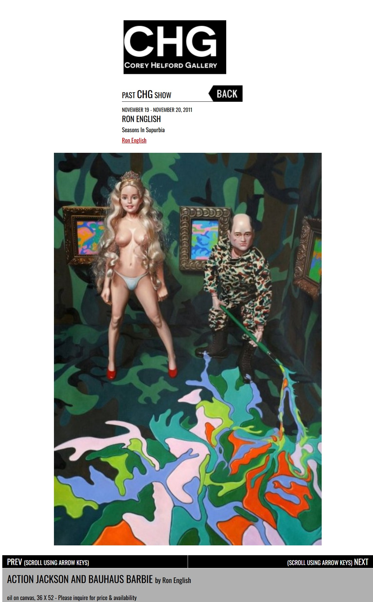
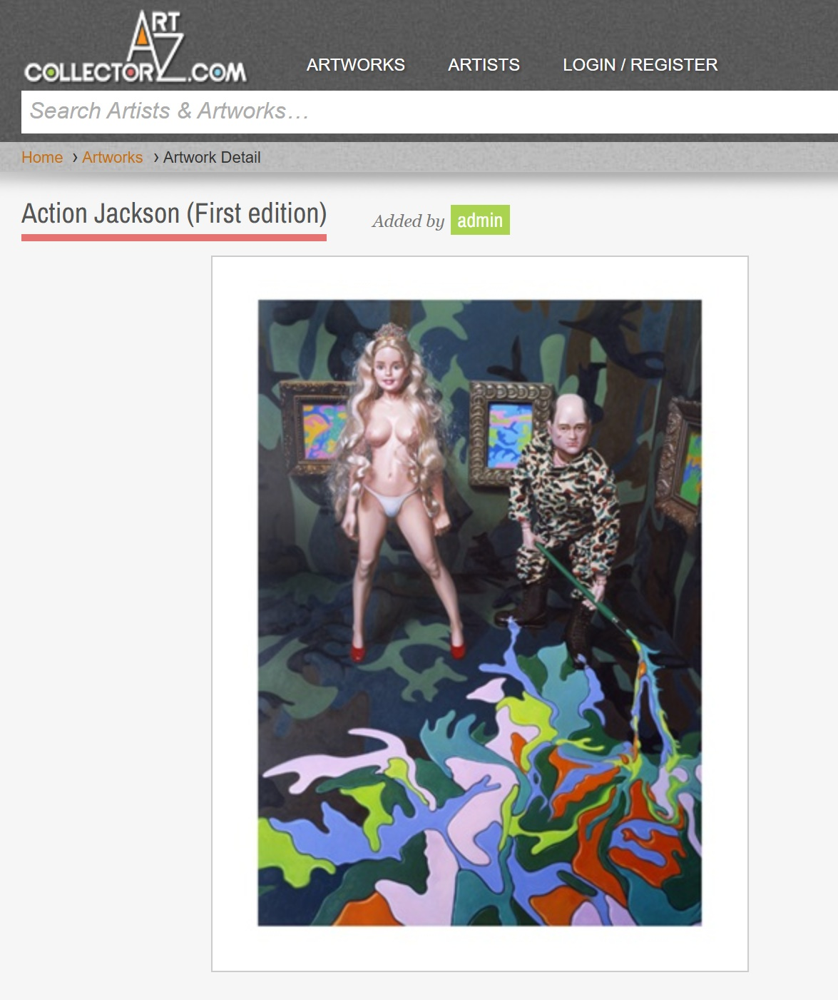

Exhibitions
Seasons In Supurbia, Corey Helford Gallery, Culver City, California, US, November 19–December 10, 2011.
Literature
Ron English, Status Factory: The Art of Ron English (San Francisco: Last Gasp of San Francisco, 2014), p. 157. ISBN 978-0867197891.
Ron English, Fauxlosophy (Darlington: Carpet Bombing Culture, 2016), p. 76. ISBN 978-1-908211-45-3.
Ron English, Original Grin: The Art of Ron English (Paris: Cernunnos, 2019), p. 339. ISBN 978-2374950938.
Notes
This work appears on Corey Helford Gallery’s artwork page for the exhibition Seasons in Supurbia, available here, accessed April 11, 2026.
This composition was later adapted by the artist as a related giclée print published by Popaganda; the cited Art Collectorz page describes Action Jackson as a signed and numbered limited edition of 10 measuring 12 × 16 inches, with five prints offered directly and five made available through the Clutter Magazine exhibition. See the related print on Art Collectorz.
Ancillary Documentation

